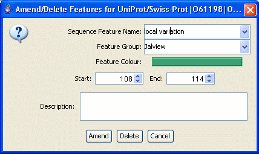

Double clicking a position in the alignment with one or more displayed sequence features opens the "Amend/Delete Features" dialog box.

The dialog box only allows one of the features at the double-clicked position to be edited or deleted at a time, and it will also be highlighted in black in the alignment window.
Choose which feature is to be modified by selecting it from the Sequence Feature Name pull down menu. In addition to the Name, group, colour and description attributes described for the new feature dialog box, a feature's start and end position can be changed either by entering a new position directly or by using the adjacent up and down buttons.
Select Amend to update the feature, Delete to remove the selected feature, or Cancel to leave the feature unchanged.
Sequence feature editing was implemented in Jalview 2.2